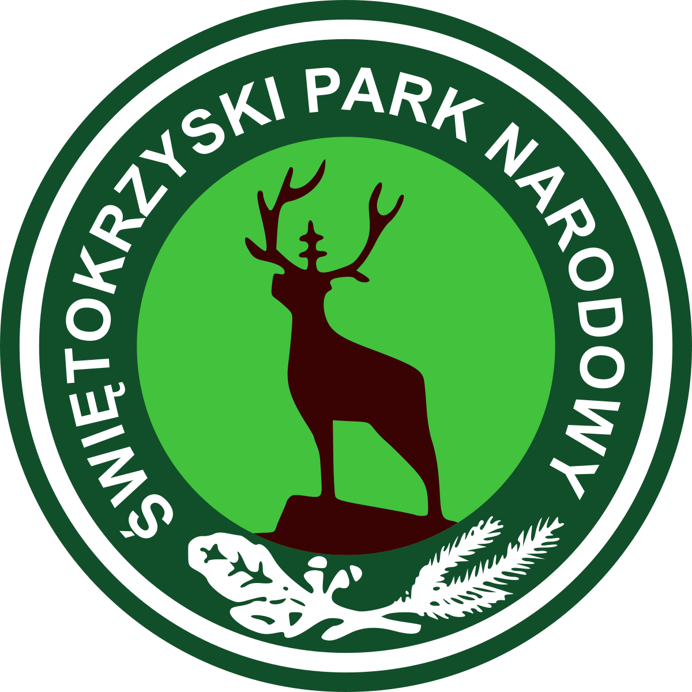

Świętokrzyski Park Narodowy
Park został utworzony w roku 1950, zajmuje powierzchnie 76,26 km², a jego symbolem jest jeleń. Jest położony jest w centralnej części Gór Świętokrzyskich, około 15 km na północny wschód od Kielc. Jest jednym z najbardziej zalesionych parków w Polsce. Lasy, stanowiące nawet 95% powierzchni, są domem dla 187 gatunków pająków. Na górskich grzbietach można spotkać charakterystyczne rumowiska skalne zwane gołoborzami.